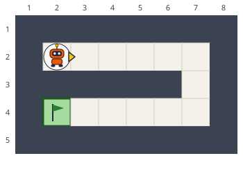

Bedingte Wiederholung
Mit einem KI-Tutor lernen
Ein KI-Tutor erklärt dir diese Seite und hilft dir bei den Aufgaben. Wähl deinen Assistenten:
Mit Claude öffnen Mit ChatGPT öffnen Mit Mistral Vibe öffnen
Du nutzt dein eigenes Konto beim Anbieter. Der Assistent ist kein Angebot von lernapps.net: lernapps liefert nur Inhalte und Aufgaben. Die Wahl gilt für alle Seiten, nur auf diesem Gerät.
Gänge ohne bekannte Länge
Im Klassenchat der 7b:
Selin: In meinem Labyrinth ist jeder Gang anders lang. Mit „wiederhole … mal“ klappt es immer nur bei einem.
Ali: Kiko soll einfach laufen, bis die Wand kommt.
Frau Berg: Genau dafür gibt es „solange … tue“.
Hier lernst du, wie Kiko wiederholt, solange eine Bedingung wahr ist.
Aufgabe
Lösung
solange Weg frei? tue gehe vorwärts richtige Antwort
Vor jedem Schritt prüft Kiko, ob frei ist. Kommt die Wand, hört er auf, egal nach wie vielen Feldern.
wiederhole 5 mal: gehe vorwärts
Das klappt nur bei einem Gang mit genau 5 freien Feldern. Bei einem kürzeren läuft Kiko gegen die Wand.
wenn Weg frei? dann gehe vorwärts
Eine Verzweigung prüft nur einmal. Kiko geht höchstens ein Feld.
solange Wand voraus? tue gehe vorwärts
Die Bedingung ist verkehrt herum. Ist frei, ist sie falsch, und Kiko geht gar nicht los.
Wenn niemand vorher weiß, wie oft, hilft eine Schleife mit Bedingung statt mit Zahl.
Wiederholen, solange die Bedingung wahr ist
 © CC-BY-4.0
© CC-BY-4.0Kiko läuft, solange vor ihm frei ist.
- bedingte Wiederholung
Eine bedingte Wiederholung führt den Schleifenrumpf aus, solange die Bedingung wahr ist. Kiko prüft die Bedingung vor jedem Durchlauf. Ist sie falsch, hört die Wiederholung auf, auch schon vor dem ersten Durchlauf.
Merke
Geprüft wird nur vor jedem Durchlauf, nicht mitten im Rumpf. Der Block „nicht“ dreht eine Bedingung um. „Lauf, bis du am Ziel bist“ schreibst du darum so: solange nicht am Ziel? tue gehe vorwärts.
- Endlosschleife
Eine Endlosschleife hört nie auf, weil ihre Bedingung nie falsch wird. Wie auf der Seite Eigenschaften: Ein Ablauf, der nie endet, löst keine Aufgabe, die enden soll.
Selbst ausprobieren
Ohne Computer: Legt die Karten „solange ___ tue“ und „Weg frei?“ mit „gehe vorwärts“ darin. Jemand stellt die Wand heimlich irgendwohin. Kiko fragt vor jedem Schritt laut: „Weg frei?“

Mit Computer, zwei Challenges:
- Drei Gänge, jeder anders lang, mit höchstens 3 Blöcken: Challenge „Wie lang ist der Gang?“ öffnen
- Gänge mit Ecken, eine Schleife mit Verzweigung darin: Challenge „Um jede Ecke“ öffnen

© CC-BY-4.0Spielfeld 1 von „Um jede Ecke“. An jeder Ecke biegt der Gang nach rechts ab.
Übung
Aufgabe
Drei Beispielaufgaben, jede mit ihrer Lösung:
Aufgabe Nr. 1
Programm: solange Weg frei? tue gehe vorwärts. Vor Kiko liegen 4 freie Felder, dann kommt eine Wand. Wie oft geht Kiko vorwärts?
Tipp
Spiel es für 2 freie Felder durch. Wie oft ist der Weg frei?
Lösung
- Vor jedem der 4 freien Felder ist der Weg frei: Kiko geht vorwärts.
- Danach ist die Wand voraus, die Bedingung ist falsch. Kiko ging 4-mal vorwärts.
Richtige Antwort: 4
Aufgabe Nr. 2
Programm: solange Weg frei? tue gehe vorwärts. Vor Kiko liegen 9 freie Felder, dann kommt eine Wand. Wie oft geht Kiko vorwärts?
Tipp
Spiel es für 2 freie Felder durch. Wie oft ist der Weg frei?
Lösung
- Vor jedem der 9 freien Felder ist der Weg frei: Kiko geht vorwärts.
- Danach ist die Wand voraus, die Bedingung ist falsch. Kiko ging 9-mal vorwärts.
Richtige Antwort: 9
Aufgabe Nr. 3
Programm: solange Weg frei? tue gehe vorwärts. Vor Kiko liegen 6 freie Felder, dann kommt eine Wand. Wie oft geht Kiko vorwärts?
Tipp
Spiel es für 2 freie Felder durch. Wie oft ist der Weg frei?
Lösung
- Vor jedem der 6 freien Felder ist der Weg frei: Kiko geht vorwärts.
- Danach ist die Wand voraus, die Bedingung ist falsch. Kiko ging 6-mal vorwärts.
Richtige Antwort: 6
Aufgabe
Drei Beispielaufgaben, jede mit ihrer Lösung:
Aufgabe Nr. 1
Programm: solange Weg frei? tue gehe vorwärts. Vor Kiko liegen 7 freie Felder, dann eine Wand. Wie oft prüft Kiko die Bedingung „Weg frei?“?
Tipp
Kiko prüft vor jedem Durchlauf und einmal am Ende, wenn die Antwort falsch ist.
Lösung
- 7 Prüfungen mit der Antwort wahr, jedes Mal geht Kiko ein Feld.
- Dazu 1 Prüfung mit der Antwort falsch: zusammen 8.
Richtige Antwort: 8
Aufgabe Nr. 2
Programm: solange Weg frei? tue gehe vorwärts. Vor Kiko liegen 9 freie Felder, dann eine Wand. Wie oft prüft Kiko die Bedingung „Weg frei?“?
Tipp
Kiko prüft vor jedem Durchlauf und einmal am Ende, wenn die Antwort falsch ist.
Lösung
- 9 Prüfungen mit der Antwort wahr, jedes Mal geht Kiko ein Feld.
- Dazu 1 Prüfung mit der Antwort falsch: zusammen 10.
Richtige Antwort: 10
Aufgabe Nr. 3
Programm: solange Weg frei? tue gehe vorwärts. Vor Kiko liegen 6 freie Felder, dann eine Wand. Wie oft prüft Kiko die Bedingung „Weg frei?“?
Tipp
Kiko prüft vor jedem Durchlauf und einmal am Ende, wenn die Antwort falsch ist.
Lösung
- 6 Prüfungen mit der Antwort wahr, jedes Mal geht Kiko ein Feld.
- Dazu 1 Prüfung mit der Antwort falsch: zusammen 7.
Richtige Antwort: 7
Aufgabe
Lösung
Richtige Antwort: Die Aussage stimmt.
Beim Drehen bleibt Kiko auf seinem Feld und kommt nie ans Ziel. Die Bedingung bleibt wahr, das ist eine Endlosschleife.
Aufgabe
Lösung
Richtige Antwort: wiederhole 6 mal: gehe vorwärts – genau 6 Felder; solange Weg frei? tue gehe vorwärts – bis zur Wand; wenn Weg frei? dann gehe vorwärts – genau 1 Feld
Die Zählschleife läuft so oft, wie die Zahl sagt. Die bedingte Wiederholung läuft, solange ihre Bedingung wahr ist, egal wie oft. Eine Verzweigung prüft nur einmal.
Rückblick und wie es weitergeht
In diesem Kapitel hast du Programme aus Blöcken gebaut und debuggt, Kiko mit Verzweigungen entscheiden und mit Schleifen wiederholen lassen. Selin schreibt: „Kiko findet jetzt durch mein ganzes Labyrinth! 🎉“ Später, in Klasse 9 und 10, schreibst du dieselben Programme als Struktogramm, als Pseudocode und als Text.
Fehler gefunden oder eine Idee für diese App?